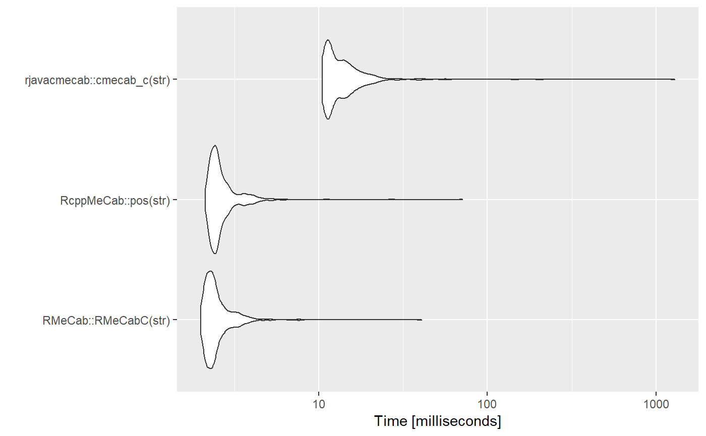

RcppMeCabは本家のjunhewk/RcppMeCabからビルドできないため、ltl-manabi/RcppMeCabを利用しています。
str <- "キャピキャピ音が高くなってきたら、ほんとに出してくれの合図です！ しっかりここではコミュニケーションとってください"
tm <- microbenchmark::microbenchmark(
RMeCab::RMeCabC(str),
RcppMeCab::pos(str),
rjavacmecab::cmecab_c(str),
times = 500L
)
summary(tm)
#> expr min lq mean median uq
#> 1 RMeCab::RMeCabC(str) 1.9889 2.18445 2.598791 2.34345 2.6304
#> 2 RcppMeCab::pos(str) 2.1235 2.33130 2.881254 2.47775 2.7719
#> 3 rjavacmecab::cmecab_c(str) 10.5144 11.25235 17.269080 12.50500 15.1400
#> max neval
#> 1 40.7289 500
#> 2 70.9969 500
#> 3 1291.4422 500ggplot2::autoplot(tm)
#> Coordinate system already present. Adding new coordinate system, which will replace the existing one.